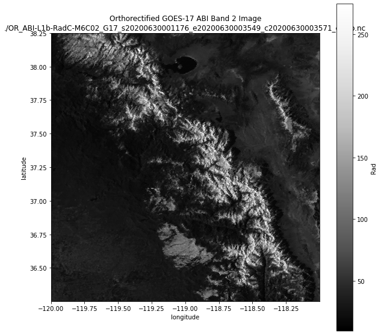

Orthorectifying a GOES ABI image with goes_ortho.ortho()#
Orthorectify and clip a GOES ABI image using an input DEM
[1]:
import matplotlib.pyplot as plt
import xarray as xr
import goes_ortho
We will use the goes_ortho.ortho() function to orthorectify and clip a GOES ABI image for an area within lat/lon bounds we’ll specify.
First, provide a filepath to the GOES ABI image we want to orthorectify:
[2]:
goes_image_path = "/storage/GOES/goes17/2020/3/3/ABI-L1b-RadC/00/C02/OR_ABI-L1b-RadC-M6C02_G17_s20200630001176_e20200630003549_c20200630003571.nc"
We can specify a list of the variables in the dataset that we want to include in the orthorectified dataset:
[3]:
data_vars = ["Rad"]
And then we need to provide a new filepath and filename for where to save the final orthorectified dataset:
[4]:
new_goes_filename = "./OR_ABI-L1b-RadC-M6C02_G17_s20200630001176_e20200630003549_c20200630003571_ortho.nc"
Finally, specify the lat/lon bounds for the area we want to orthorectify, like (min lon, min lat, max lon, max lat):
[5]:
bounds = (-120.0, 36.25, -118.0, 38.25)
# bounds = (-120.0, 37.65, -118.0, 38.25)
Run the function!
[6]:
goes_ortho.ortho(goes_image_path, data_vars, bounds, new_goes_filename, keep_dem=False)
https://portal.opentopography.org/API/globaldem?demtype=SRTMGL3&west=-120.0&south=36.25&east=-118.0&north=38.25&outputFormat=GTiff
/home/spestana/opt/anaconda3/envs/goes-linux/bin/gdalwarp -r cubic -co COMPRESS=LZW -co TILED=YES -co BIGTIFF=IF_SAFER -tr 30 30 -t_srs '+proj=lonlat +datum=GRS80' temp_SRTMGL3_DEM.tif temp_SRTMGL3_DEM_proj.tif
/home/spestana/opt/anaconda3/envs/goes-linux/bin/gdalwarp -r cubic -co COMPRESS=LZW -co TILED=YES -co BIGTIFF=IF_SAFER -tr 30 30 -t_srs '+proj=lonlat +datum=GRS80' temp_SRTMGL3_DEM.tif temp_SRTMGL3_DEM_proj.tif
RUNNING: make_ortho_map()
Opening GOES ABI image...
Child returned 1
Get inputs: projection information from the ABI radiance product
...done
Opening DEM file...
Create 2D arrays of longitude and latitude from the DEM
...done
For each grid cell in the DEM, compute the corresponding ABI scan angle (x and y, radians)
...done
Create metadata dictionary about this map
...done
Create pixel map dataset
<xarray.Dataset>
Dimensions: (latitude: 2400, longitude: 2400)
Coordinates:
* longitude (longitude) float64 -120.0 -120.0 -120.0 ... -118.0 -118.0
* latitude (latitude) float64 38.25 38.25 38.25 ... 36.25 36.25 36.25
dem_px_angle_x (latitude, longitude) float64 0.03902 0.03902 ... 0.04471
dem_px_angle_y (latitude, longitude) float64 0.1047 0.1047 ... 0.1003
Data variables:
elevation (latitude, longitude) float64 1.777e+03 ... 1.155e+03
Attributes:
longitude_of_projection_origin: -137.0
semi_major_axis: 6378137.0
semi_minor_axis: 6356752.31414
satellite_height: 42164160.0
grs80_eccentricity: 0.0818191910435
longitude_of_projection_origin_info: longitude of geostationary satellit...
semi_major_axis_info: semi-major axis of GRS 80 reference...
semi_minor_axis_info: semi-minor axis of GRS 80 reference...
satellite_height_info: distance from center of ellipsoid t...
grs80_eccentricity_info: eccentricity of GRS 80 reference el...
dem_file: temp_SRTMGL3_DEM.tif
dem_crs: +init=epsg:4326
dem_transform: (0.000833333333333144, 0.0, -120.00...
dem_res: (0.000833333333333144, 0.0008333333...
dem_ifov: -9999
dem_file_info: filename of dem file used to create...
dem_crs_info: coordinate reference system from DE...
dem_transform_info: transform matrix from DEM geotiff
dem_res_info: resolution of DEM geotiff
dem_ifov_info: instantaneous field of view (angula...
dem_px_angle_x_info: DEM grid cell X coordinate (east/we...
dem_px_angle_y_info: DEM grid cell Y coordinate (north/s...
longitude_info: longitude from DEM file
latitude_info: latitude from DEM file
elevation_info: elevation from DEM file
...done
Return the pixel map dataset.
RUNNING: orthorectify_abi_rad()
Does the projection info in the image match our mapping?
Opening GOES ABI image... ABI image value Pixel map value
perspective_point_height + semi_major_axis: 42164160.0 42164160.0
semi_major_axis: 6378137.0 6378137.0
semi_minor_axis: 6356752.31414 6356752.31414
longitude_of_projection_origin: -137.0 -137.0
...done
Map (orthorectify) and clip the image to the pixel map for Rad
...done
Map (orthorectify) and clip the image to the pixel map for ABI Fixed Grid coordinates
...done
Create zone labels for each unique pair of ABI Fixed Grid coordinates (for each orthorectified pixel footprint)
...done
Output this result to a new NetCDF file
Saving file as: ./OR_ABI-L1b-RadC-M6C02_G17_s20200630001176_e20200630003549_c20200630003571_ortho.nc
...done
Open the new file we created, and plot it:
[7]:
ds = xr.open_dataset(new_goes_filename)
[8]:
fig, ax = plt.subplots(1, 1, figsize=(10, 10))
ax.set_aspect(1)
ds.Rad.plot(ax=ax, cmap="Greys_r")
ax.set_title("Orthorectified GOES-17 ABI Band 2 Image\n{}".format(new_goes_filename));

[ ]: